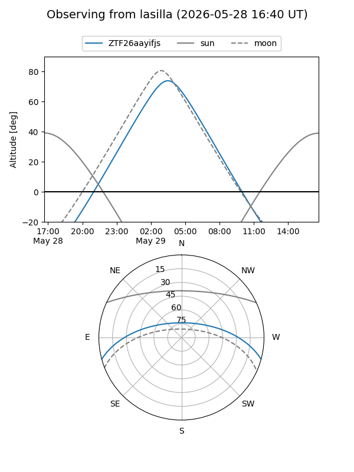
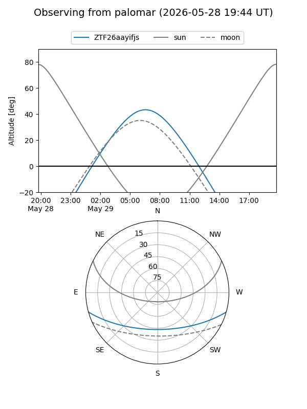

ZTF26aayifjs
Target ZTF26aayifjs at 2026-05-29 12:16
Aliases and brokers:
lsst-FINK: link
lsst-Lasair: link
lsst-ALeRCE: link
ztf-FINK: link
ztf-Lasair: link
ztf-ALeRCE: link
alt names
ZTF26aayifjs (ztf,fink_ztf)
Coordinates:
equatorial (ra, dec) = 227.7818,-13.15156
equatorial (HMS+DMS) = 15:11:07.62,-13:09:05.62
galactic (l, b) = (347.4673,+37.36128)
Flags:
Photometry:
last ztfg=18.68
2 ztfg detections
Lightcurve
Visibility


Additional plots